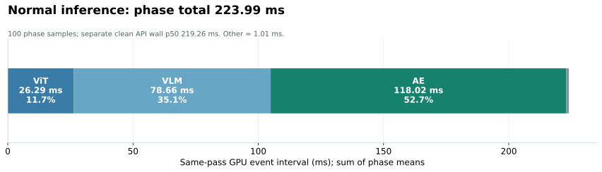
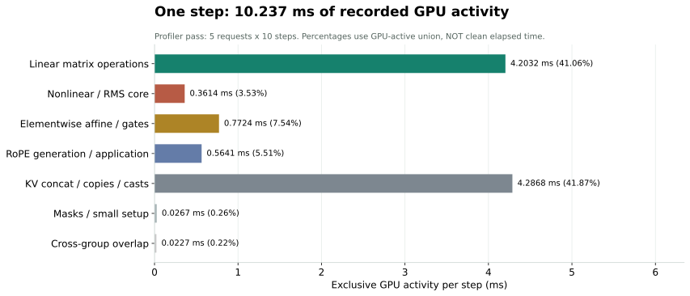
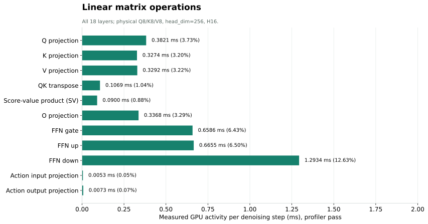
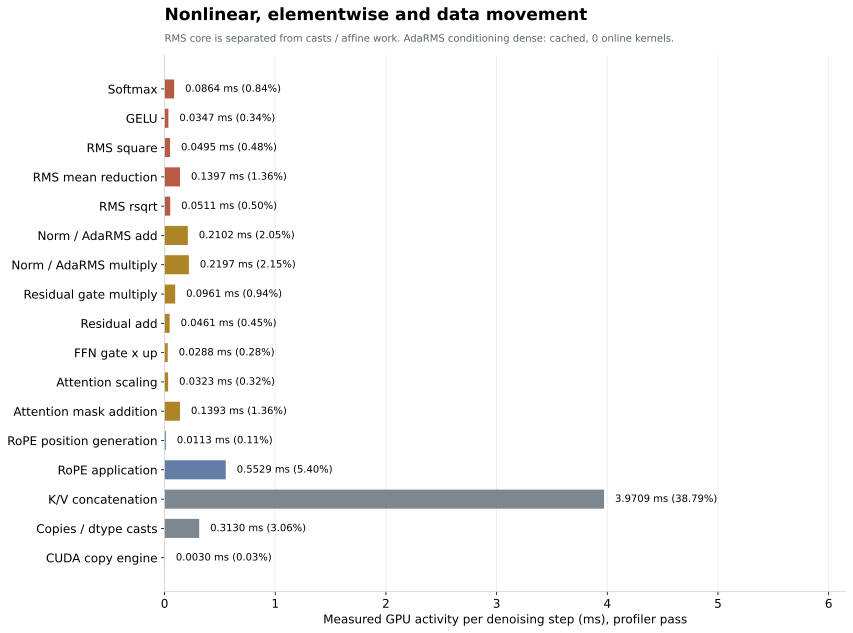
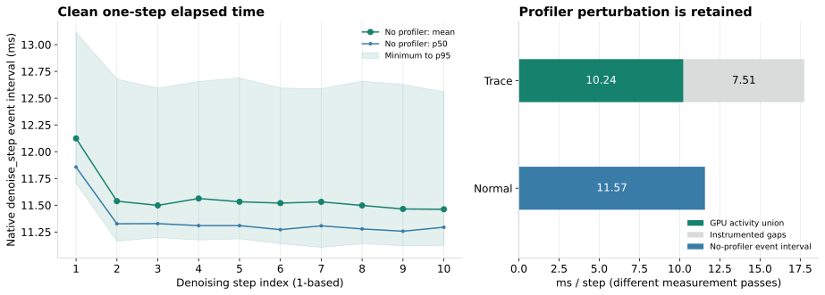

2026-11-05 · NVIDIA Thor · 新实测 · 非 H20 外推
OpenPI π0.5 · H16 · MHA8
Batch 1 · step 10 · Q/K/V 各 8 heads · head_dim 256 · AdaRMS 预计算缓存
219.26 ms完整模型 API wall p50，无 profiler，100 次
52.7%AE 占同一轮 phase 均值总和
11.57 ms正常 denoise_step 平均，无 profiler
热启动，不等于数据全在缓存。 权重先加载，20 次完整 warmup 后计时；不 flush 缓存、不强制冷读、不做 kernel replay。实际缓存未命中的访问仍会读 DRAM，测得时间包含这些等待；没有扣除 DRAM 时间。
01 / 正常推理：ViT、VLM、AE
正常计时进程没有 Nsight 注入。CUDA Events 分段，末尾统一等待完成；没有逐算子同步。粗粒度占比采用 100 次同一轮 phase 均值，合计 223.988 ms。

API wall：均值 223.888 ms，p50 219.263 ms，p95 236.121 ms。100 次中最大值 379.122 ms，保留全部样本，不剔除长尾。API wall 与 phase 是相邻但独立的控制组，不能拼接分量中位数。
AE 边界沿用之前的口径：prefix VLM 完成到动作生成结束，含 10 次 denoising、动作投影及外围 Euler/采样工作；ViT 是 3 次图像编码合计，VLM 不重复包含 ViT。
02 / 单个 denoising step 的算子级拆分
从 5 个真实完整请求 × 10 steps 的 kernel 时间线测量，先对每个请求内 10 steps 求平均，再统计 5 个请求。每 step 含 18 层及 action input/output projection，不含外部 Euler 更新。单独标注第 5 步，通过 CUDA launch correlation 归因，全部 50 steps × 1033 kernels 的名称、顺序和 launch geometry 一致。
细粒度为带采集扰动的实测，不是正常总延迟的精确分摊。 记录的 GPU activity union 为 10.237 ms/step，采集时 event interval 为 17.750 ms/step。下图百分比以 GPU activity union 为分母，不以正常的 11.573 ms 为分母。



分类说明： Nonlinear / RMS core 包含 softmax、GELU、RMS square/mean/rsqrt；norm affine、residual gate、FFN gate × up 单列逐元素操作。K/V concat、dtype cast/copy 不是非线性核心。RoPE 独立列出。AdaRMS 只缓存时间条件和 dense modulation，归一化、调制乘加及 residual 仍在线执行；每请求命中 370 次 cached dense，在线 conditioning dense 无 kernel。
Kernel 时长包含真实内存/缓存访问，不是算术单元纯计算时间，也不是未来 GPU/PIM offload 的端到端代价。组内重叠只计一次，跨组重叠另列；细分类的 overlap 与大类的 overlap 会有微小差别。
完整算子表（ms/step）
03 / 正常计时和 profiler 时间为什么不同

正常延迟如何测
- 独立 Python 进程，不由 Nsight 启动；20 次完整 warmup。
- 50 clean → 50 phases → 50 step-control → 50 phases → 50 clean。clean/phase 各 100 次；step-control 为 50 个请求的全部 10 步。
- 每请求起止同步，段内仅 record CUDA Event，不逐算子 synchronize。输入已在 GPU；不包括加载、cache 构建、传感器/网络/机器人工作。
- Phase marker 均值差 0.07%；clean 前后 p50 漂移 0.18%。每次推理后检查动作 bitwise 相同，检查不计入延迟。
细粒度如何测
- 独立 Nsight Systems 2025.6.3 进程，只开 CUDA/NVTX，无 NCU、无 PMU、无 GPU metrics、无 CPU sampling。
- 20 warmup，20 before-control，2 trace burn-in，5 trace 请求，1 单独 attribution 请求，10 恢复请求，20 after-control。
- Thor 不支持该工具的 CUDA hardware tracing，实际为软件 trace。AE p50 比 trace 进程 before-control 增加 36.3%，比 after-control 增加 16.8%；相对独立正常 AE 均值增加 52.5%。
- 所以 7.512 ms 的 traced gap 不能称为正常空闲时间；不按比例缩放到正常 AE，也不把两轮差值解释为纯 profiler 开销。
Nsight 原始诊断包含“Not all NVTX/CUDA events might have been collected”。我们验证了全部选中 step 的 kernel 序列、launch geometry 和 18 层投影覆盖，并保留诊断；这不等于证明所有后台事件均被完整记录。
04 / 配置、验证与原始证据
官方 OpenPI 原生 PyTorch 路径，selective BF16/FP32，Torch 2.11.0+cu130 / Transformers 4.53.2，CPU/interop 各 1 线程；不启用 compile 或推理 CUDA Graph，不改时钟或共享环境。
沿用已确认的 OpenPI eager、未融合 attention 路径，所以 QK / softmax / SV 可分别计时。原始 JSON 的 attention_implementation=sdpa 是首次推理前的构造时快照；OpenPI 在采样函数内切为 eager，不代表实际使用了 SDPA。源码核对说明。
MHA 是之前确认的 VLM 和 AE 均物理扩展 K/V 至 8 heads；Q/O、ViT、residual 和 FFN 宽度未改。AE D=1024/F=4096；VLM D=2048/F=16384；均 18 层，prefix 968 tokens，AE attention KV 长度 984。该修改仅用于结构延迟研究，不声明训练后 MHA 策略精度。
权重复用 Thor 现有文件，sequential readinto 加载；本次未下载模型。缓存开关及两个进程输出 bitwise 一致。正常轮 278 次、trace 轮 77 次占用检查均未发现其他 GPU PID；离散检查不能排除所有瞬态 SoC 背景活动。任务结束 GPU 进程列表为空，利用率 0%。
完整统计 JSON · 阶段 CSV · 算子 CSV · 逐 step CSV · 方法与复现
GitHub：AlinaWXY/pim_vla_simulator
分支：thor-data/pi05-openpi-mha8-h16-s10-adarms-latency-20261105
路径：thor-data/pi05-openpi-mha8-h16-s10-adarms-20261105/